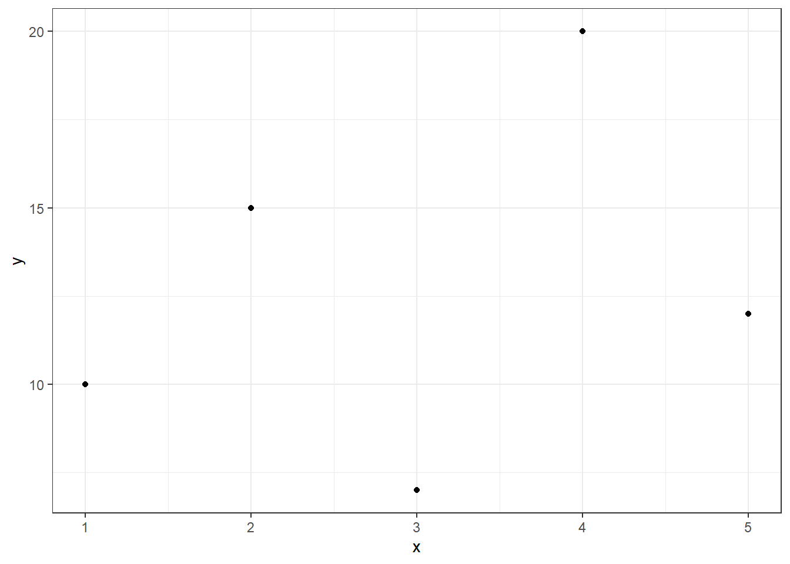

install.packages("ggplot2") #最常用的包安装方式，从CRAN上安装包
# 部分R包存放在github上,安装方式
remotes::install_github('shalom-lab/pcolor')
# 部分生信分析的R包的安装方式
BiocManager::install(c("GenomicFeatures", "AnnotationDbi"))6 安装包
在R语言中，包（packages）是一种非常重要的概念，它们包含了一组函数、数据集和文档，用于解决特定的问题或执行特定的任务。R语言本身提供了一些基本的函数和数据结构，但通过安装和加载不同的包，你可以扩展R的功能，以便更好地满足你的需求。本文将围绕R语言中的包进行入门介绍，以及如何使用这些包中的函数。
在R中，你可以使用install.packages()函数来安装新的包。例如，要安装一个名为ggplot2的包，你可以执行以下命令：
6.1 加载包
安装包后，你需要使用library()函数来加载它们，以便在你的R会话中使用包中的函数。例如，要加载ggplot2包，可以执行以下命令：
library(ggplot2)6.2 调用包里的函数
在加载包之后，即可调用包里的函数。
data <- data.frame(x = c(1, 2, 3, 4, 5), y = c(10, 15, 7, 20, 12))
# 使用ggplot2创建散点图
ggplot(data, aes(x = x, y = y)) +
geom_point()+
theme_bw()
6.3 不加载调用包中的函数
一般来说，调用包里的函数前要用library(包名)函数先加载包，随后调用函数。 一种不加载包，直接调用函数的方法如下：
dplyr::select(mtcars,c('mpg','cyl'))也即采用包名::函数名的方式直接调用某个包里的函数，这段代码没有加载dplyr包，而是用::的方式直接调用了dplyr包里的select函数,该函数的作用是选择数据框的部分列作为新的数据框返回，相当于取数据框的子集。
6.4 卸载包
要卸载一个已安装的包，你可以使用remove.packages()函数。以下是卸载包的步骤：
# 卸载包
remove.packages("ggplot2")6.5 更新包
要更新已安装的包，你可以使用update.packages()函数。以下是更新包的步骤：
- 如果你希望更新所有可用的包，可以在
update.packages()函数中设置ask参数为FALSE，然后运行函数。
# 更新所有可用的包（不询问）
update.packages(ask = FALSE)- 如果你只想更新特定的包，可以提供包名称的向量作为参数。例如，要更新”ggplot2”和”dplyr”包：
# 更新特定的包
update.packages(ask = FALSE, lib.loc = .libPaths(), oldPkgs = c("ggplot2", "dplyr"))上述方法允许你卸载和更新R包，确保你的R环境中始终使用最新版本的包。在数据分析和编程中，定期更新包非常重要，因为更新通常包含了错误修复和新功能。
6.5.1 查看已安装的包
你可以使用installed.packages()函数来查看已经安装的包列表：
installed_packages <- as.data.frame(installed.packages())
installed_packages这将显示一些关于已安装包的基本信息，如包名、版本等。